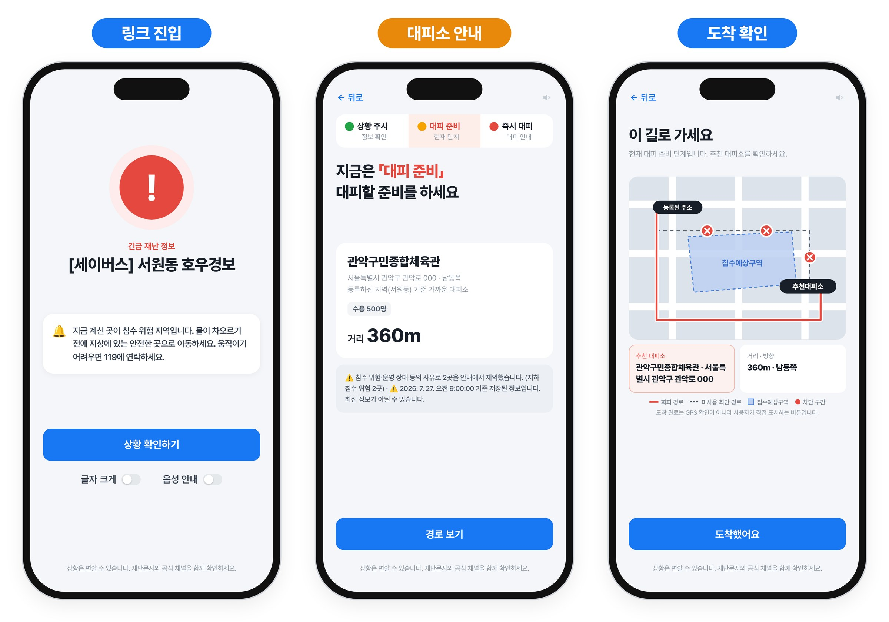

SAVERS · Evacuation guidance for disaster-vulnerable residents
Minister of Employment and Labor Award · joint 3rd of 326 teams · first author, ACK 2026Official disaster texts send the same message to everyone in an area. SAVERS is a PWA that gives residents who cannot judge or evacuate alone personal guidance, with no app install and no constant location tracking, and tells guardians whether their family member has evacuated.
Code decides·LLM explains
What I did
- Role
- Team lead · PM · Evaluation & infra
- Period
- Jul – Sep 2026
- Team
- Team of 4 · K-Digital Training Hackathon 2026
Team
Took over QA and infrastructure from a teammate who left mid-project, re-planned roles and schedule, and switched from fixing the design up front to short iterations
Evaluation code
A 40-case guardian golden set (35 answer, 5 refusal), 12 adversarial regressions, a 34-case refusal probe and automated scoring scripts
Infrastructure code
Real FCM web-push sending (PR #214, #215), Vercel and AWS EC2 deployment, CI quality checks
Records and paper
Kept the decision records (ADRs); first-authored and presented the ACK 2026 paper
Code I wrote
Evaluation code (apps/ai-engine/eval), Real FCM sending PR #214, #215
Results
Screens

System architecture
Rule-based code decides, the LLM explains

Purple badges mark the parts I owned. Click the image to enlarge it. (Diagram in Korean.)
Key decisions
1. Rule-based code decides, the LLM only explains
Why: If an LLM produced shelters or routes, a hallucination would become a safety incident.
What changed: Risk levels come straight from the official KMA and flood-control alerts; shelters and flood-avoiding routes come from OSMnx / NetworkX rule-based code. The LLM only explains fixed results, and guardian replies use the event log as their only evidence.
Result: A teammate's verifier splits each answer into claims and checks them against the log. I built the evaluation set that tests the verifier, with a pass bar of zero unsupported claims.
2. Measure both answering and refusing
Why: Grounding scores alone miss answers built on unrelated evidence.
What changed: A refusal probe with 28 questions that should be answered and 6 controls that should be refused measured both directions separately.
Result: Wrong refusals were low at 1/28, but all 6 controls were answered. I traced the cause to retrieval rather than the verifier and documented it with steps to reproduce.
3. After teammates left, ship the minimum first
Why: Teammates left mid-development, and the remaining four had to split the work again.
What changed: Real web-push sending, flood-avoiding routes and guardian check-in came first; real-time public-API ingestion was moved to after the competition.
Result: We merged about 240 reviewed code changes, finished on time and won the Minister of Employment and Labor Award, joint 3rd of 326 teams.
Limitations
35/35 and 12/12 come from feeding pre-written correct and adversarial answers straight into scoring. During the refusal probe the generator was an offline stub that copies evidence sentences, so the numbers must be re-measured with a real model.